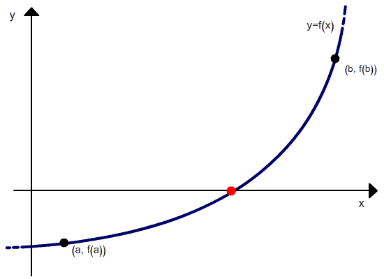

Topic 9 Secant Method
Recall that Newton’s method uses Taylor expansion to derive the functional recursive relationship between adjacent approximated roots \[ x_{n+1} = x_n - \frac{f(x_n)}{f^\prime(x_n)} \text{ for }n = 0, 1, \cdots. \]
where \(f^\prime(x_n)\) is the slope of the tangent line passing through \(x=x_n\). If we use the slope of a secant line that passes through points \((x_n, f(x_n))\) and \((x_{n-1}, f(x_{n-1}))\), we can use the x-coordinates of the intersection between the secant line and x-axis to approximate the root of \(f(x) = 0\).
9.1 Secant Method
Assume we have two distinct initial values \(x = x_0\) and \(x = x_1\). Then slope of the secant line passing through A\((x_0, f(x_0))\) and B\((x_1, f(x_1))\) is \[ \frac{f(x_1)-f(x_0)}{x_1-x_0} \approx f^\prime(x_1) \text{ when } |x_1-x_0| \text{ is small}. \] The secant method uses the x-coordinate of the intersection of the secant line \[ f(x) = f(x_1) + \frac{f(x_1)-f(x_0)}{x_1-x_0}(x - x_1) \] and \(f(x) = 0\) (equation of the x-axis). Solving for \(x\), we have \[ x = x_1 -\frac{x_1-x_0}{f(x_1)-f(x_0)} f(x_1) \equiv x_2. \]

In general, the recursive relationship between approximated roots of the secant method is given by
\[
x_{n+1} = x_n -\frac{x_n-x_{n-1}}{f(x_n)-f(x_{n-1})} f(x_n), \text{ for } n =0, 1, \cdots
\]

9.2 Secant Algorithm and Implementation
We develop the following pseudo-code of the secant method.
INPUT: f(x) (satisfying f(x) = 0)
x0 (initial value 1)
x1 (initial value 2)
STEP 1: x0
x1 (f(x0)*f(x1) must be negative)
M = 200
TOL = 10^(-6)
n = 0
ERR = |x1 - x0|
STEP 2: WHILE ERR > TOL DO
n = n + 1
new.x = x1 - ((x1-x0)/(f(x1)-f(x0)))*f(x1)
ERR = |new.x - x1|
IF ERR < TOL DO:
OUTPUT (results and optional relevant info)
STOP
ENDIF
IF ERR >= TOL DO:
OUTPUT (message or intermediate outputs)
x1 = new.x (update)
x0 = x1
ENDIF
IF n == M DO:
OUTPUT (warning messages)
STOP
ENDIF
ENDWHILE9.2.1 Implementation with R
We next write an R function to implement the secant method.
########################################
## Root Finding: Secant Method
#########################################
Secant.Method = function(fn, # input function
TOL, # error tolerance
max.iter, # max allowed iterations
x1, # initial value #1
x2 # initial value #2
){
ctr = 0 # counter of iteration
ERR = abs(x2 - x1) # initial error - width of initial interval
# Define a data frame (data table) to store the output of each iteration
ERR.table = data.frame(Iteration = 1:max.iter,
Est.root = rep(NA, max.iter),
Abs.error = rep(NA, max.iter))
while(ERR > TOL){
ctr = ctr + 1
new.x = x2 - fn(x2) * (x2 - x1) / (fn(x2) - fn(x1))
ERR = abs(new.x - x2)
if(ERR < TOL){
ERR.table[ctr,] = c(ctr, new.x, ERR)
break
} else{
ERR.table[ctr,] = c(ctr, new.x, ERR)
# updating the two values. CAUTION: order matters
x1 = x2
x2 = new.x
}
if(ctr == max.iter){
#cat("\n\nThe maximum number of iterations attained!\n\n\n")
break
}
} # close the while-loop
if(ctr==max.iter){
pander(data.frame(message = "The maximum number of iterations attained!"))
} else{
na.omit(ERR.table) # delete rows with NAs (missing values)
}
} # close the function environment9.2.2 Numerical Examples
Example 1: Find a root of equation \(x^3+x^2+6x+18 = 0\).
Solution: we use the above R function of the Newton method to find the approximated root of the equation.
# define the function f(x) that satisfies f(x) = 0
example01.func = function(x){x^3+x^2+6*x+18 }
###
xx = seq(-5,5, length=500) # 500 evenly x-values evenly spread on [-5, 5]
yy = example01.func(xx) # the corresponding y values
plot(xx, yy, type = "l", xlab ="", ylab="", main="", lwd = 2, col = "blue")
abline(h=0, col = "darkred", lty = 2)Based on the above graph, we search a root over \([-5, 5]\) in the follwoing function call.
# call the function
error.matrix = Secant.Method(fn = example01.func, # input function
TOL = 10^(-8), # error tolerance
max.iter = 5, # max allowed iterations
x1 = -5, # initial value #1
x2 = 5) # initial value #2
pander(error.matrix)## Warning in pander.default(error.matrix): No pander.method for "knit_asis", reverting to default.message The maximum number of iterations attained!
The error plot is given by
if(length(dim(error.matrix))>0){
###
Error = error.matrix$Abs.error
nitr = length(Error)
plot(1:nitr, Error, type = "l", lwd = 2, col = "blue",
main="Error Plot",
xlim = c(0,nitr+1),
ylim = c(0, max(Error)),
xlab = "Iteration Numbers",
ylab = "Absolute Error",
cex.main = 0.8,
col.main = "darkred"
)
}else{
pander(data.frame(meesage ="The approximation error is unavailable!"))
}| meesage |
|---|
| The approximation error is unavailable! |
Practice Exercise: find the solution to \(0.8(x+0.5)^3-1=0\) 0n \([0.25, 2.75]\).
9.3 Error Analysis
Let \(e_n = x_n - p\), then \(e_n - e_{n-1} = x_n - x_{n-1}\). From the definition of the secant method we have \[ e_{n+1} = e_n + x_{n+1} - x_n = e_n -\frac{x_n-x_{n-1}}{f(x_n)-f(x_{n-1})}f(x_n). \] With some algebraic manipulation, we can express \(e_{n+1}\) as \[ e_{n+1} = \frac{x_n-x_{n-1}}{f(x_n)-f(x_{n-1})}\frac{f(x_n)/e_n - f(x_{n-1})/e_{n-1}}{x_n-x_{n-1}}e_ne_{n-1}. \] Note that \[ \frac{x_n-x_{n-1}}{f(x_n)-f(x_{n-1})} \approx \frac{1}{f^\prime(p)} \] After expanding \(f(x_n)\) and \(f(x_{n-1})\) at \(p\), we have \[ \frac{f(x_n)/e_n - f(x_{n-1})/e_{n-1}}{x_n-x_{n-1}} \approx \frac{f^{\prime\prime}(p)}{2} \]
Therefore, \[ e_{n+1} \approx \frac{f^{\prime\prime}(p)}{2f^\prime(p)}e_ne_{n-1} \]
Consequently, \[ \lim_{n\to \infty}\frac{e_{n+1}}{e_ne_{n-1}} = \frac{f^{\prime\prime}(p)}{2f^\prime(p)} = C_0 \] To find the order of convergence, we assume that \(e_{n+1} = C_ne_n^\alpha\) where \(\lim_{n \to \infty} C_n = C\). Then
\[ \lim_{n\to \infty}\frac{e_{n+1}}{e_ne_{n-1}}=\lim_{n\to \infty}\frac{C[Ce_{n-1}^\alpha]^\alpha}{Ce^\alpha_{n-1}e_{n-1}} = \lim_{n\to\infty}C^\alpha e_{n-1}^{\alpha^2-\alpha -1} = C_0. \]
This implies that \[ \alpha^2 -\alpha - 1 = 0 \] The positive root of the above equation is \[ \alpha = \frac{1+\sqrt{5}}{2} \approx 1.62 \]
Therefore, the convergence order for the secant method is between linear and quadratic orders – we call this super-linear convergence!
9.4 False Position Method
The method of False Position (also called Regula Falsi) generates approximations using the x-coordinates of successive secant lines defined prior approximated roots in such a ways that the actual roots is always \([x_n, x_{n-1}]\) in the n-th iteration. Programmatically, it is the secant method with an additional control statement.
First choose initial approximations \(p_0\) and \(p_1\) with \(f ( p_0) \times f ( p_1) < 0\). The approximation \(p_2\) is chosen in the same manner as in the Secant method, as the x-intercept of the line joining \(( p_0, f ( p_0))\) and \(( p_1, f ( p_1))\). To decide which secant line to use to compute \(p_3\), consider \(f ( p_2) \times f ( p_1)\), or more correctly \(\text{sgn} f ( p_2) \times \text{sgn} f ( p_1)\)
- If \(\text{sgn} f ( p_2) \times \text{sgn} f ( p_1) < 0\), then \(p_1\) and \(p_2\) bracket a root. Choose \(p_3\) as the x-intercept of the line joining \(( p_1, f ( p_1))\) and \(( p_2, f ( p_2))\).
- If not, choose \(p_3\) as the x-intercept of the line joining \(( p_0, f ( p_0))\) and \(( p_2, f ( p_2))\), and then interchange the indices on \(p_0\) and \(p_1\).

The following is an animated graph showing the process of search the root using false position method.

Finally, the order of convergence of false position method is same as the secant method.